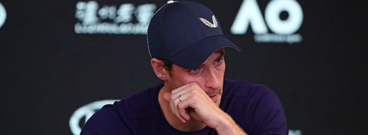
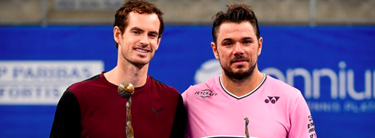
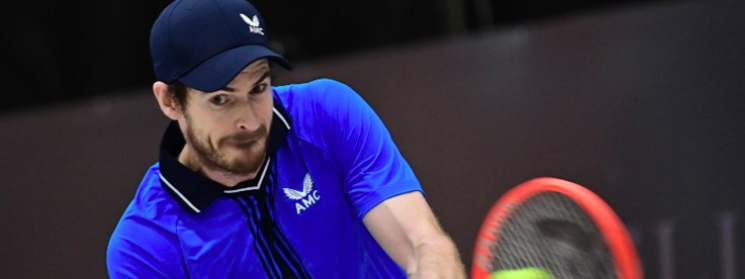

Andy Murray’s comeback – the timeline
Andy Murray's tennis career is one of the most decorated and talked about in the history of the sport. From the highs of Grand Slam titles and reaching World No.1 and the setbacks that almost ended his career - we take a look back at his tennis journey to date as he gets back to the top of the game.
August 2017 – Withdraws from the US Open with a hip injury two days before the event, missing his first Grand Slam since Roland Garros in 2013. Would not play again in 2017 and would relinquish his World Number 1 ranking to Nadal.
January 2018 – Despite travelling to Australia to practice for the Brisbane Open, Murray withdraws from the event – along with the Australian Open – and takes to Instagram to tell his fans that he’s considering surgery for his hip. Five days later, Murray confirms that he’s undergone surgery in a second post.
June 2018 – Returns to action at the Queen’s Club but loses to Nick Kyrgios in the first round. Was given a wildcard for the Eastbourne International, where he beat Stan Wawrinka in the first round before losing to Kyle Edmund in the second.
July 2018 – Withdrew from Wimbledon with a "heavy heart" a day before the tournament, saying it was too soon to play five-set matches. As a result of this withdrawal, he dropped to 839th in the ATP Rankings, his newest low ranking since he first entered the ATP Rankings on 21 July 2003.
August 2018 – Reaches the third round of the Washington Open. Match lasts until just past 03:00 local time. Murray wept after the conclusion of the match against Marius Copil, overcome with emotion.
September 2018 – Reaches the quarter finals of the Shenzhen Open but is then forced to pull out of the China Open the following week, after suffering an ankle problem. Decides to call time on his season to prepare for 2019.
January 2019 – That interview. At a press conference before the Australian Open, an emotional Murray announced that he could possibly retire from professional tennis due to struggling physically for a "long time".

March 2019 – Murray confirms that he has undergone a second hip operation – known as hip resurfacing – following advice from American doubles legend Bob Bryan who had the same procedure. Murray states that he is pain-free and is targeting a return to tennis.
June 2019 – Return to the fold. Partnering Spaniard Feliciano Lopez, Murray enters into the doubles competition at Queen's. Much to the delight of the fans, and the tennis world, the pair would go all the way and claim victory.
July 2019 – Back to Wimbledon! Murray returned to the hallowed turf of the All England Club to first take part in the men’s doubles – alongside France’s Pierre-Hugues Herbert – and then the mixed doubles where he formed a dream partnership with US great Serena Williams.
August 2019 – Makes his singles return at the 2019 Winston-Salem Open – where he lost in straight sets to American Tennys Sandgren.
October 2019 – Back in the winner’s circle. Two months after returning to competitive singles, Murray triumphs in the European Open in Antwerp, Belgium, beating Stan Wawrinka in the final.

December 2019 – Forced to withdraw from the Australian Open 2020 after suffering from a pelvic injury.
June 2020 – Returns to action for the first time in seven months at the Schroders Battle of the Brits.
August 2020 – Defeats World Number 7, Zverev 6-3, 3-6, 7-5 in the second round of the Western & Southern Open. It was the first time that Murray beat a player inside the world’s top ten since 2017, where he overcame Kei Nishikori in the quarter-final of the French Open.
September 2020 – Recovers from two sets down to win his first Grand Slam match in 20 months 4-6 4-6 7-6 (5) 7-6 (4) 6-4 against Japan’s Yoshihito Nishioka. Would exit the event in the second round after defeat to 15th seed Felix Auger-Aliassime of Canada. Is beaten by Wawrinka in straight sets in the opening round at Roland Garros.

October 2020 – Withdraws from an ATP Tour event in Cologne, citing issues with a persistent pelvic problem.
December 2020 – Returns to action at the Battle of the Brits Premier League of Tennis, beating British No.1 Dan Evans and British No.3 Cam Norrie in the two matches he played.
September 2021– At the US Open, Murray had a difficult opening draw against Stefanos Tstsipas but went toe-to-toe with the Greek in a first round classic, finishing 2-6, 7-6, 3-6, 6-3, 6-4 in favour of the World No.3.
October/November 2021 – More progress for the former World No.1, picking up strong wins against Hubert Hurkacz, Jannik Sinner, Carlos Alcaraz and Frances Tiafoe in several ATP events.
March 2022 – Murray reached a new milestone in his career, becoming only the 18th man to win 700 tour matches after beating Japan's Taro Daniel. In true Murray style, the Brit came from a set down and then a break in the third to win 1-6, 6-2, 6-4 in Indian Wells.